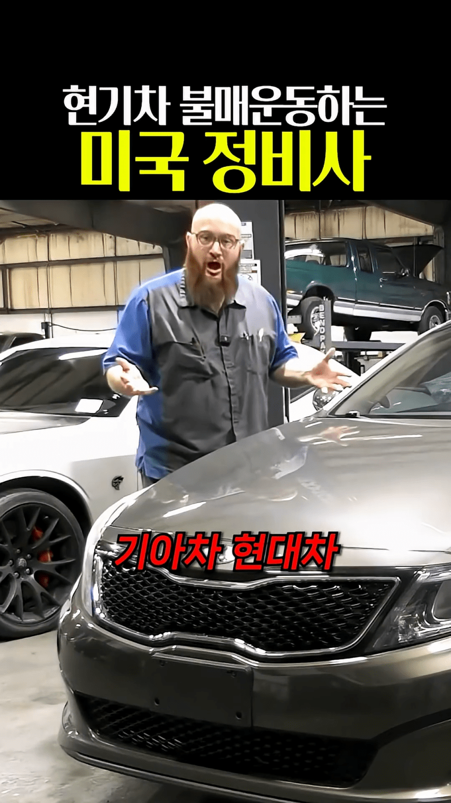
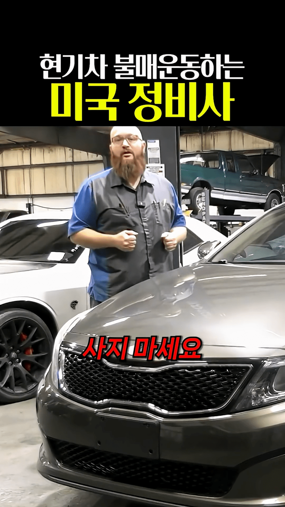
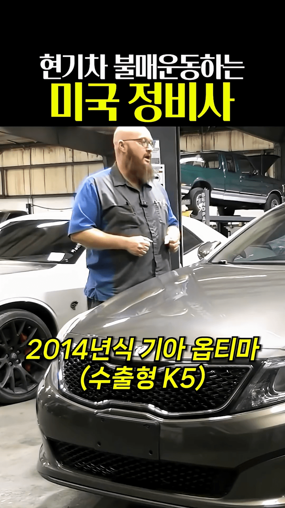
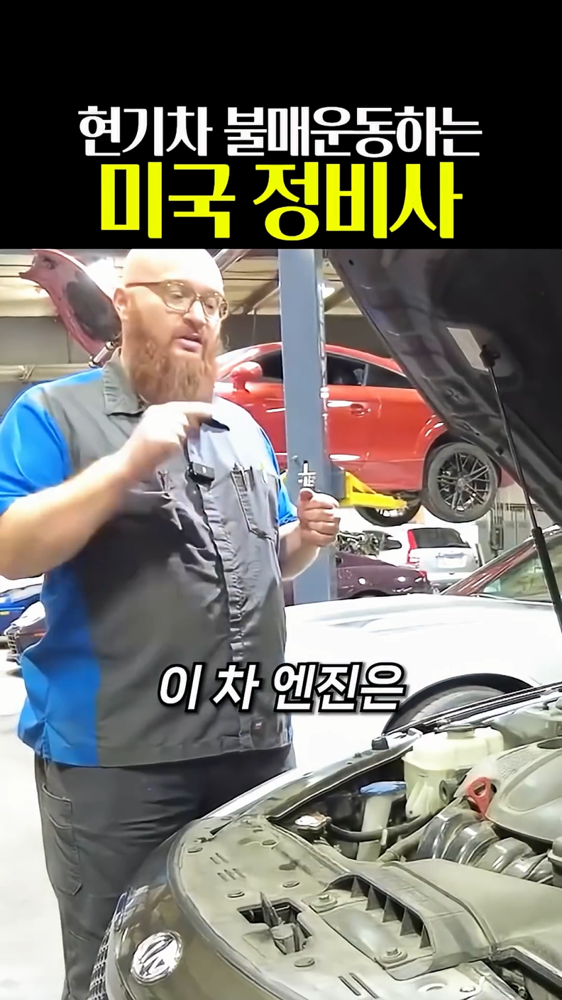
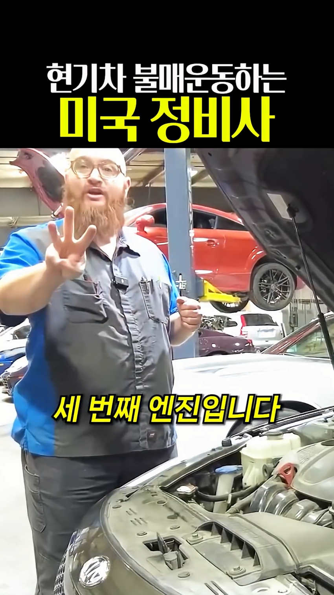
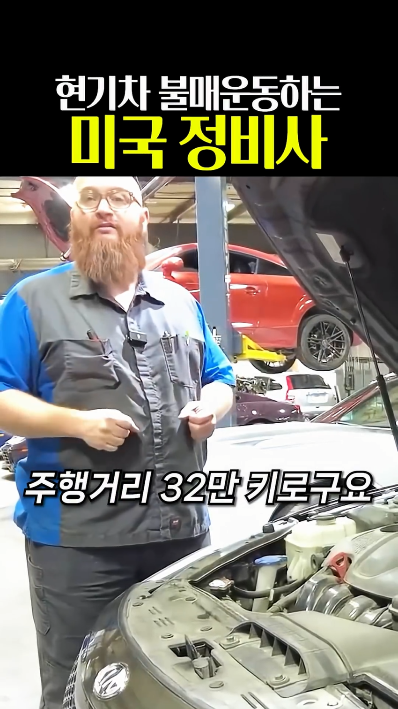
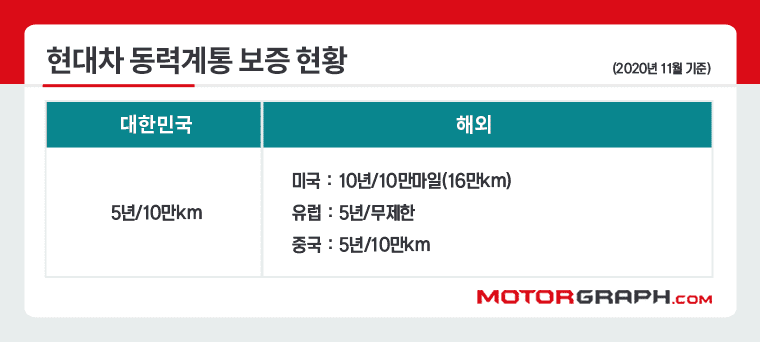
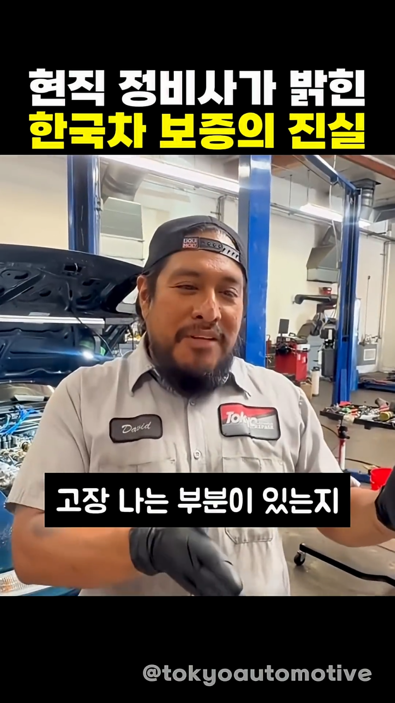

한국인 : 10만 탔으면 폐차해야지 거지들인가
미국인 : 32만 밖에 못탔는데 3번째 엔진? 흉기차는 역시 쓰레기








한국인 : 10만 탔으면 폐차해야지 거지들인가
미국인 : 32만 밖에 못탔는데 3번째 엔진? 흉기차는 역시 쓰레기


댓글
수집 당시 댓글 148개
공정성장 · 11.08 20:38:17
· ㅇㅇ · 11.08 20:54:36
해갤러 · 11.08 20:39:04
· 차갤러4 · 11.09 02:07:45
ㅇㅇ · 11.08 20:41:01
· ㅇㅇ · 11.08 20:47:09
· ㅇㅇ · 11.09 01:02:18
· 차갤러4 · 11.09 02:07:53
ㅇㅇ · 11.08 20:41:24
· ㅇㅇ · 11.08 20:54:21
msnr · 11.08 20:41:38
· ㅇㅇ · 11.08 20:46:35
ㅇㅇ · 11.08 20:45:51
2찍 저능아 답게
· ㅇㅇ · 11.08 20:46:07
본질을 못봄 ㅋ
· ㅇㅇ · 11.08 20:46:45
현대차를 타는
· ㅇㅇ · 11.08 20:47:04
연령대와 소비층이 다른데
· ㅇㅇ · 11.08 20:47:32
변수가 오직 차량에만 있는거라
· ㅇㅇ · 11.08 20:47:38
생각함 ㅋ
· ㅇㅇ · 11.08 20:47:48
그리고 미국인이 말하면
· ㅇㅇ · 11.08 20:47:58
다 맞는줄앎 ㅋ
· ㅇㅇ · 11.08 20:53:56
· ㅇㅇ · 11.08 22:11:34
ㅇㅇ · 11.08 20:46:54
· 차갤러4 · 11.09 02:08:03
ㅇㅇ · 11.08 20:49:23
· 차갤러4 · 11.09 02:08:09
ㅇㅇ · 11.08 20:54:00
· ㅇㅇ · 11.08 20:55:05
· ㅇㅇ · 11.08 21:00:36
ㅇㅇ · 11.08 20:57:45
ㅇㅇ · 11.08 20:59:55
· ㅇㅇ · 11.08 21:01:59
· 유류유우률류우류류 · 11.08 21:34:14
· ㅇㅇ · 11.09 00:43:55
ㅇㅇ · 11.08 21:00:34
오빠
· ㅇㅇ · 11.08 21:00:42
병신
이야?
ㅇㅇ · 11.08 21:01:42
ㅇㅇ · 11.08 21:03:24
ㅇㅇ · 11.08 21:07:42
· ㅇㅇ · 11.08 21:07:57
· ㅇㅇ · 11.08 21:17:48
· ㅇㅇ · 11.08 21:18:00
ㅇㅇ · 11.08 21:08:33
· ㅇㅇ · 11.08 21:17:33
ㅇㅇ · 11.08 21:10:58
· ㅇㅇ · 11.08 21:15:20
· ㅇㅇ · 11.08 21:40:13
ㅇㅇ · 11.08 21:14:17
ㅇㅇ · 11.08 21:17:01
내꿈은기생수! · 11.08 21:19:47
ㅇㅇ · 11.08 21:26:43
롤클리너리필 · 11.08 21:27:07
ㅇㅇ · 11.08 21:28:40
· ㅇㅇ · 11.08 21:34:04
ㅇㅇ · 11.08 21:31:04
ㅇㅇ · 11.08 21:34:18
· ㅇㅇ · 11.08 21:40:26
ㅇㅇ · 11.08 21:43:33
ㅇㅇ · 11.08 21:50:22
ㅇㅇ · 11.08 22:05:47
ㅇㅇ · 11.08 22:12:29
· 세계안보수호 · 11.08 22:29:06
ㅇㅇ · 11.08 22:12:35
ㅇㅇ · 11.08 22:14:38
ㅇㅇ · 11.08 22:21:23
ㅇㅇ · 11.08 22:26:29
· ㅇㅇ · 11.08 22:27:21
· ㅇㅇ · 11.08 22:28:15
ㅇㅇ · 11.08 22:33:15
· ㅇㅇ · 11.08 22:34:16
쿠두두룩 · 11.08 22:51:50
ㅇㅇ · 11.08 23:01:39
ㅇㅇ · 11.08 23:01:46
ㅇㅇ · 11.08 23:01:51
ㅇㅇ · 11.08 23:06:33
ㅇㅇ · 11.08 23:30:57
ㅇㅇ · 11.08 23:33:52
ㅇㅇ · 11.08 23:41:52
· ㅇㅇ · 11.09 00:03:55
ㅇㅇ · 11.08 23:54:51
ㅇㅇ · 11.08 23:58:55
ㅇㅇ · 11.09 00:03:35
ㅇㅇ · 11.09 00:06:30
ㅇㅇ · 11.09 00:08:24
ㅇㅇ · 11.09 00:21:16
ㅇㅇ · 11.09 00:23:57
Daegutiger · 11.09 00:26:39
ㅇㅇ · 11.09 01:18:43
ㅇㅇ · 11.09 01:26:15
oㅇoㅇ · 11.09 01:26:34
주소킹 · 11.09 01:27:42
ㅇㅇ · 11.09 03:05:45
ㅇㅇ · 11.09 03:38:20
ㅇㅇ · 11.09 04:07:25
ㅇㅇ · 11.09 04:07:29
ㅇㅇ · 11.09 04:08:20
ㅇㅇ · 11.09 04:36:05
ㅇㅇ · 11.09 10:50:25
ㅇㅇ · 11.09 14:40:38
ㅇㅇ · 11.09 18:35:53
땨뗘(봇) · 11.08 20:30:06
楚覇王 項羽 · 11.08 20:30:59
· 워매매워 · 11.08 22:09:39
· 楚覇王 項羽 · 11.09 01:30:18
ㅇㅇ · 11.08 20:32:54
· ㅇㅇ · 11.08 20:33:04
· ㅇㅇ · 11.08 20:51:56
· ㅇㅇ · 11.08 20:52:27
ㅇㅇ · 11.08 20:33:38
· ㅇㅇ · 11.08 20:36:08
· ㅇㅇ · 11.08 20:36:44
· 바쇽 · 11.08 20:51:52
· ㅇㅇ · 11.08 20:52:43
· ㅇㅇ · 11.08 20:53:04
· ㅇㅇ · 11.08 22:12:15
ㅇㅇ · 11.08 20:33:56
· ㅇㅇ · 11.08 23:10:27
캐피탈리즘 · 11.08 20:34:06
ㅇㅇ · 11.08 20:34:25
ㅇㅇ · 11.08 20:34:53
ㅇㅇ · 11.08 20:35:25
· ㅇㅇ · 11.08 20:35:56
· ㅇㅇ · 11.08 20:38:37
· ㅇㅇ · 11.08 20:38:37
· ㅇㅇ · 11.08 20:39:49
· ㅇㅇ · 11.08 20:44:52
· ㅇㅇ · 11.08 20:53:36
· ㅇㅇ · 11.08 22:47:47
· ㅇㅇ · 11.09 01:19:44
ㅇㅇ · 11.08 20:35:28
ㅇㅇ · 11.08 20:35:57
ㅇㅇ · 11.08 20:36:04
ㅇㅇ · 11.08 20:36:27
· ㅇㅇ · 11.08 20:36:37
· ㅇㅇ · 11.08 20:59:21
· ㅇㅇ · 11.08 22:11:22
· ㅇㅇ · 11.09 01:52:04
· 차갤러4 · 11.09 02:07:30
ㅇㅇ · 11.08 20:37:46
· ㅇㅇ · 11.08 20:54:52
· ㅇㅇ · 11.09 01:14:23
· ㅇㅇ · 11.09 01:20:16
· ㅇㅇ · 11.09 01:21:07
· ㅇㅇ · 11.09 01:21:49
· 차갤러4 · 11.09 02:07:04
· ㅇㅇ · 11.09 02:10:51
· 차갤러2 · 11.09 02:25:18
· ㅇㅇ · 11.09 02:29:47